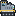
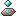
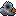
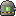
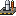
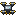

Do zero à fábrica
Colete à mão, ponha fornalhas e mineradoras, e passe para montadoras em três níveis que fazem tudo sozinhas.
Rede de Reativação
Jogo de automação industrial para PC. Comece coletando minério com as mãos e termine com fábricas inteiras ligadas por esteiras, canos, trens e drones — sozinho ou com os amigos.
Windows e Linux · 64 bits
Uma fábrica que cresce com você: cada máquina nova pede peças que outra máquina tem que fazer.
Colete à mão, ponha fornalhas e mineradoras, e passe para montadoras em três níveis que fazem tudo sozinhas.
Duas fileiras de itens, três velocidades, passagens subterrâneas e aéreas, divisor com filtro e balanceadores, e braços mecânicos que pegam e soltam o que você mandar.
Gerador a carvão, vapor, painéis solares que dormem à noite, turbinas de vento e baterias para guardar a sobra.
Extrator, refinaria e planta química: plástico, combustível sólido, enxofre, ácido sulfúrico, lubrificante e rolamentos, com canos para levar tudo.

Ferrovias com sinais e estações automáticas, carro, helicóptero, avião, jetpack e drones de entrega.

Religue os Nós de cada região cumprindo contratos em etapas. Cada região guarda um recurso que só existe lá.

Ameaça opcional em quatro níveis, de pacífico a patrulhas: torres de vigia, sentinelas, MEKs abandonados e um Guardião em cada Nó.
Monte um Posto de segurança com a sucata dos guardiões: os seus MEKs patrulham a base e enfrentam quem chegar.
Explore as ruínas da Rede pelo mapa: os cofres guardam módulos que deixam as máquinas mais rápidas ou econômicas.

Urânio tirado com ácido, centrífuga e um reator que move seis motores a vapor. Deixe faltar água e ele explode.

O fim da campanha: monte o foguete no silo, lance as cinco peças das regiões e religue a Rede ao céu. Depois, satélites e pesquisas infinitas.

Multijogador cooperativo, servidor dedicado (até em painel Pterodactyl) e mods feitos só de dados.
Fotos do próprio jogo. Clique para ver grande.
O que entrou em cada versão de teste.
Carregando as novidades… Se não aparecer, veja o arquivo NOVIDADES.md.
O jogo é vendido no itch.io. Todos que jogam juntos precisam da mesma versão.
.zip inteiro numa pasta (não abra de dentro do .zip).Mekzorio.exe (Windows) ou o Mekzorio.x86_64 (Linux).É uma versão alfa: o jogo está em desenvolvimento e pode ter erros. Faça cópia dos seus mundos. PC fraco? Em Opções → Gráficos escolha Qualidade Baixa ou o Modo leve.
| Mínimo | Recomendado | |
|---|---|---|
| Sistema | Windows 10/11 ou Linux, 64 bits | — |
| Processador | 2 núcleos | 4 núcleos |
| Memória | 4 GB | 8 GB |
| Placa de vídeo | OpenGL 3.3 (quase todas desde 2012) | Com Vulkan (GTX 600+, HD 7000+, Intel HD 500+) |
| Disco | 500 MB | — |
O jogo é cooperativo: todo mundo constrói a mesma fábrica.
Quem hospeda abre um mundo, aperta Esc e escolhe Abrir para a rede. Os outros entram em Multijogador → Entrar por endereço (IP:porta, padrão 27777 UDP).
Fica ligado sem ninguém jogando. Baixe o servidor para Linux ou use o egg do Pterodactyl. Libere a porta UDP 27777.
Jogo e servidor precisam estar na mesma versão. Quando sair uma nova, todo mundo atualiza junto.
Conte o que aconteceu e o que você estava fazendo, se der com uma foto da tela.